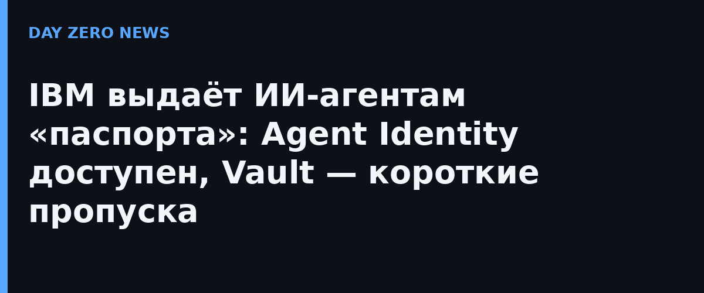

IBM представила на TechXchange 2026 (Атланта, 27 октября) набор инструментов, который превращает ИИ-агентов в «сотрудников с оформленным допуском». IBM Agent Identity ведёт центральный реестр агентов: кто владелец, какие метаданные, к какому классу риска относится агент и какие полномочия ему делегированы. Продукт вышел из превью в общую доступность.
Второй слой — HashiCorp Vault, который десятилетиями хранит секреты приложений, теперь выдаёт учётные данные самим агентам: динамические, короткоживущие, с принципом минимальных прав и отзывом в реальном времени, если агент пытается сделать лишнее. Идея проста: агент, сливший ключ, теряет его через минуты, а не навсегда, как это бывает с постоянными токенами в .env-файлах.
Третья часть — IBM watsonx Orchestrate: обнаружение, изоляция и оценка агентов в одном месте, независимо от того, собраны ли они в Amazon Bedrock, Microsoft Foundry или Google Gemini. Vault и Agent Identity также интегрированы с NVIDIA OpenShell. Компания недвусмысленно отвечает на проблему, которая в этом году стала главной в агентской безопасности: агенты разворачиваются быстрее, чем люди успевают их проверить, и «невидимый» агент с постоянным токеном — уже не гипотеза, а источник реальных инцидентов.
Ссылка на цифры Gartner из пресс-релиза звучит как приговор хаотичному «ай-агент-в-каждый-ящик»: 150 000 агентов на компанию к 2028 году при 13% уверенных в собственном управлении агентами. Vault уже защищает «не-human» идентичности в ABN AMRO, Adobe, BBVA, BlackRock, Starbucks и Target — теперь та же дисциплина распространяется на автономные модели.